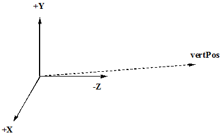
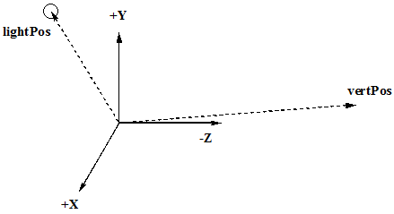
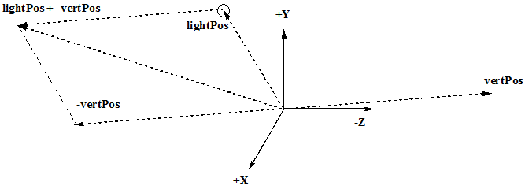
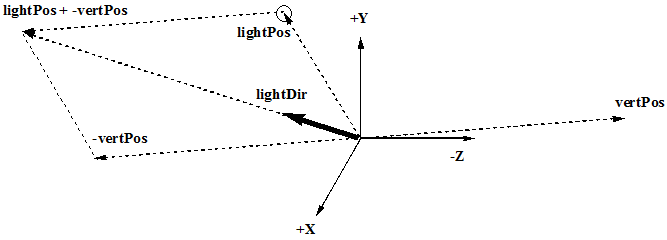
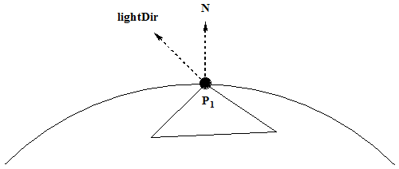
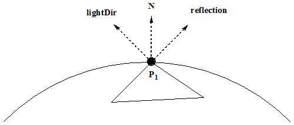
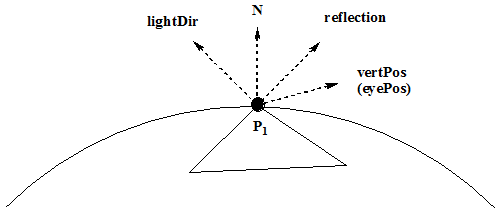

Let's discect just the math part of the new code.

In this line multiply the vertex by the model matrix and the view matrix. This will push the vertex away from the
origin. Remember the camera is aways at the origin looking down the -Z axis. In many books and websites they refer to this as
eyePos but really it is the vertex position from the eye. If the this vector is negated (-vertPos), I agree it is the
eyePos but only from the point of view of the now shifted vertex. Too complicated for me.
The call to vec3(...) is a typecast to convert the resulting vec4 to a vec3 we no longer need the be in 4-D.
The light source is not altered by any of the matrix transformations, so it position remains the location passed by the uniform lightPos.

What is needed now is to calculate the position of the light source with respect to the new position of the vertex. By subtracting the the
lightPos fron the vertPos (add the lightPos to the negative of the vertPos).

Normalizing the lights position gives the lightDir from the point-of-view of the, matrix shifted, vertex. The lightDir
will be passed to the fragment shader.

I'm bringing everything in as a vec3 since we no longer need to worry about 4-D homogenious coordinate systems. The final color
still needs to be a vec4.
Since this is the fragment shader, the code is being run on a per-pixel level. So, given a pixel P1, on some triangle,
the normal to the surface at that point is N and the lightDir vector is drawn below. The drawings I'm providing are a "lying"
version of the story. None of the vectors, except the vertex are "at the vertex position" they are really ate the origin
but remember, they are directional vectors only, so my pictures, although technically wrong, is painting a
correct picture.

The amount of diffused light on the surface is equal to the cos() between the normal to the surface and the lightDir - the dot product.
The dot product between the two vectors will go between 1.0 and -1.0. The max() function keeps all the values positive or zero.
Calculating the relection vector of the lightPos off the surface defined by the normal, the direction of the reflecting off the surface can
be created.

Because I'm basing this math at the vertex position (a big lie), this next bit is harder to see. To find the specular value I need to take the dot product
of the refletion vector with the eyeDir but is really the vertexPos is the negative of the eyePos from the vertex prespective so reverse it again.
Therefore, the eyePos is the vertPos.

The last part is raising the spectular component to a power, specexponent. This is just artistic and has nothing to do with physics.
The higer the exponent, the "shinnier" the surface.